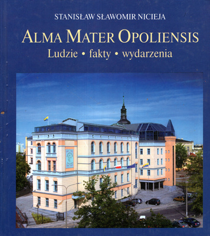

ALMA MATER OPOLIENSIS
Księga jubileuszowa w 50. rocznicę Wyższej Szkoły Pedagogicznej w Opolu i 10. rocznicę powstania Uniwersytetu Opolskiego.
Alma Mater Opoliensis ukazuje fenomen tworzenia się na przestrzeni półwiecza środowiska uniwersyteckiego w mieście, które wcześniej nie miało żadnych tradycji akademickich. Publikacja ma orginalną i złożoną konstrukcję. Fragmentami jest esejem intelektualnym, przechodzącym w literacką opowieść pełną biograficznych wątków i anegdot, by niepostrzeżenie przemienić się w drobiazgowy, wręcz encyklopedyczny dokumentarny zapis pełen nieznanch faktów, wydobytych z archiwów rodzinnych, setek relacji oraz notatek prasowych dziś już z często niedostępnych czasopism.
Książka jest owocem wieloletnich prac dokumentacyjnych autora, ale również zapisem jego wspomnień, przeżyć, rozległych znajomości i aktywnego, wieloletniego uczestnictwa w tworzeniu opolskiej wspólnoty uniwersyteckiej. Wypełnia ją cała galeria ludzi, tych "z pierwszych stron gazet" i tych, których po raz pierwszy wpisano w rejestr historii.